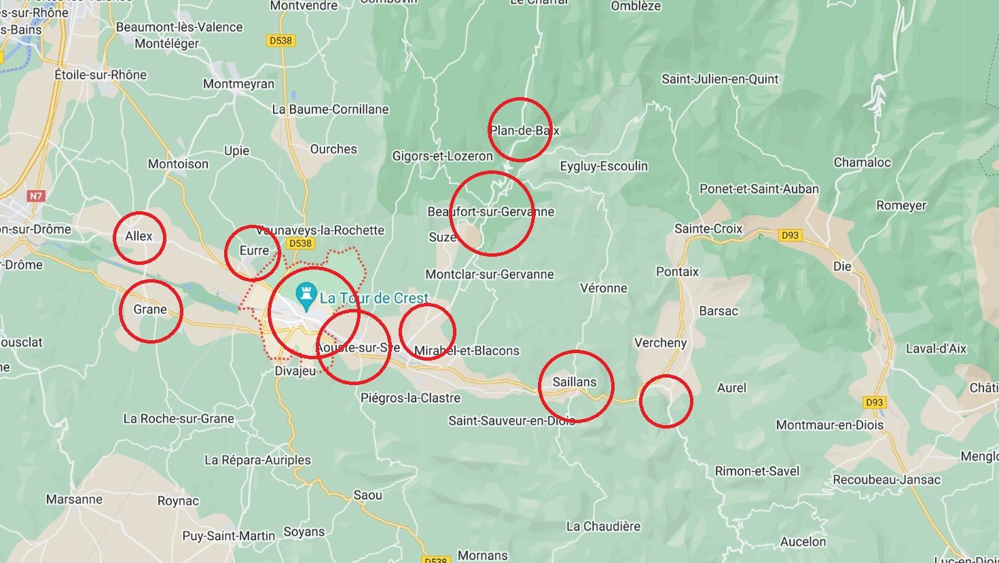

Territoire
L'Eglise protestante unie du Crestois est au bénéfice d'une histoire de plus de 500 ans, qui remonte aux temps de la Réforme du XVIe siècle. Historiquement, les Eglises réformées sont implantées sur le territoire du Crestois depuis cette époque, avec une période difficile (en gros, de la révocation de l'Edit de Nantes en 1685 à la Révolution française en 1789) où les protestants ont dû vivre et pratiquer leur foi en toute discrétion, par exemple au lieu-dit Clos-Rond (sur la commune de Gigors et Lozeron).
Où nous trouver ?
A la fin du XXe siècle, nous utilisions encore dix lieux de culte pour neuf temples (voir la carte ci-dessous) : Allex, Aouste sur Sye, Beaufort sur Gervanne, Crest, Espenel, Eurre, Grâne, Mirabel et Blacons (presbytère), Plan de Baix, Saillans.
Aujourd'hui, notre Eglise s'organise essentiellement autour de deux lieux, Beaufort et Crest, cette dernière étant la ville principale de la communauté de communes et l'endroit le plus pratique pour la majorité de nos activités. C'est aussi là, à Crest, qu'est situé le bureau du pasteur Jean-Paul Brunel (voir l'adresse en haut à droite).
Pour le culte
Le mieux est de consulter le calendrier des cultes :
Temple de Crest
En général, le 1er et le 3e dimanches du mois. (voir le calendrier des cultes)
Temple de Beaufort sur Gervanne
En général, le 2e et le 4e dimanches du mois. (voir le calendrier des cultes)
Autres lieux
Temple de Grâne
Deux fois par an : 1er dimanche de juillet suivi du barbecue géant à Allex et 1er dimanche de décembre pour la soupe au lard à Allex. (voir le calendrier des cultes)
Temple de Plan de Baix
Une fois par trimestre environ. (voir le calendrier des cultes)
Presbytère de Blacons
Le parc du presbytère de Blacons est utilisé aux beaux jours (printemps et été) pour des cultes en plein air et des moments spéciaux. (voir le calendrier des cultes)
Temple de Saillans
Une fois par an, en octobre ou en novembre. (voir le calendrier des cultes) Il s'agit désormais d'une théâtre-temple appartement à la Communauté de Communes du Crestois et du Pays de Saillans.
Clos-Rond (Gigors et Lozeron)
Une fois par an, durant l'été, nous avons le culte dans les bois, ce lieu emblématique où se réunissaient nos aïeux pendant la période du Désert. (voir le calendrier des cultes)
Temples de Aouste sur Sye, Allex, Eurre
Ces temples ont été vendus et ne sont plus utilisés.
Pour les activités régulières
Temple de Crest
La plupart des activités ont lieu dans les salles du temple de Crest : école biblique, KT-ciné, groupe de jeunes, réunion de prière, Sacré P'tit Chœur, les répétitions des musiciens, repas partagés, etc.
.